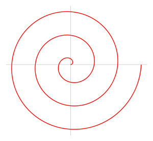

Starting from anywhere on the canvas, draw a spiral towards the center like the example below
test
Parkinson's disease (PD) is a neurodegenerative disorder that affects predominately dopamine-producing (“dopaminergic”) neurons in a specific area of the brain called substantia nigra. Symptoms generally develop slowly over years. The progression of symptoms is often a bit different from one person to another due to the diversity of the disease. People with PD may experience: Tremor, mainly at rest and described as pill rolling tremor in hands. Other forms of tremor are possible Bradykinesia Limb rigidityGait and balance problems
Researchers in Australia asked volunteers to draw a spiral on a sheet of paper. By analyzing how long it took them to draw the spiral and how hard they pressed on the paper with the pen, the team could not only tell which volunteers had Parkinson's disease, they could also tell how severe it was.